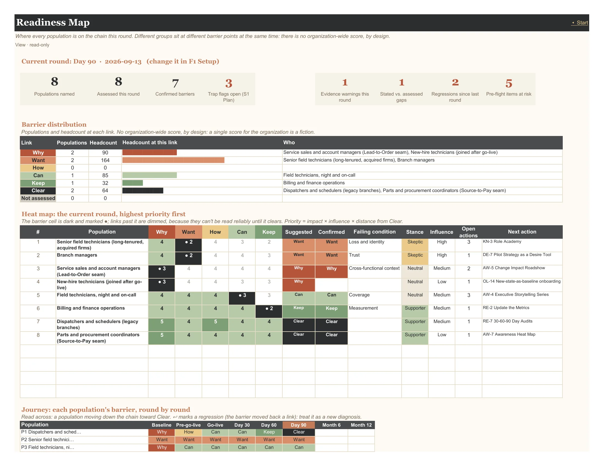
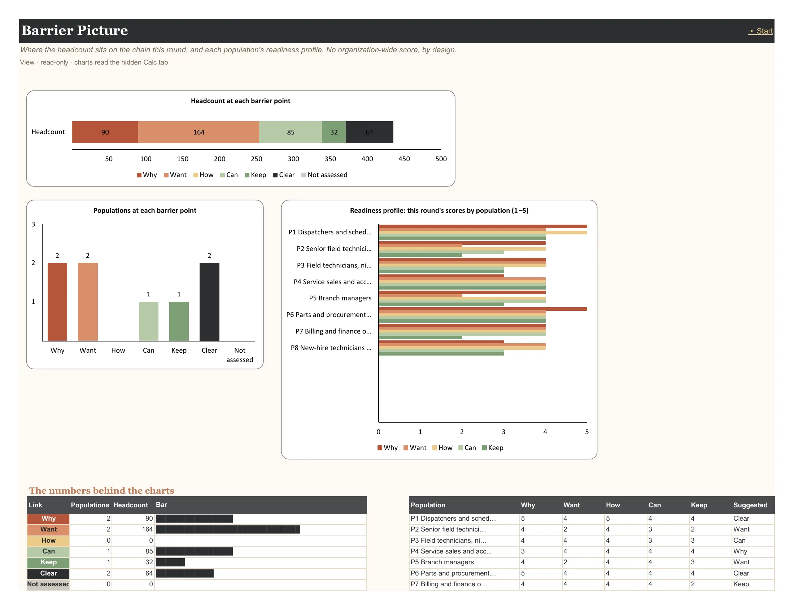
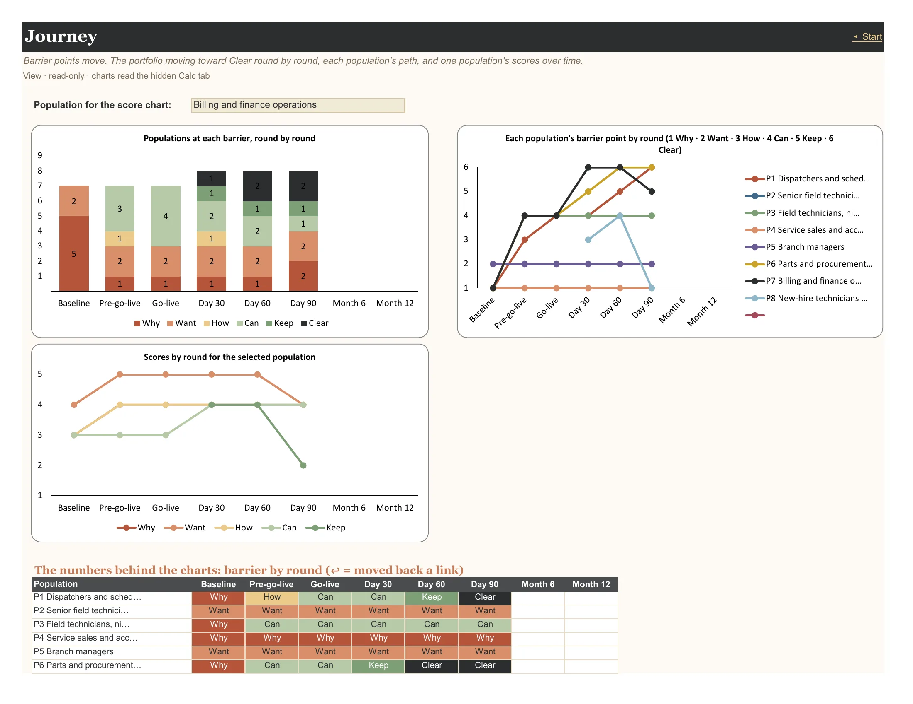
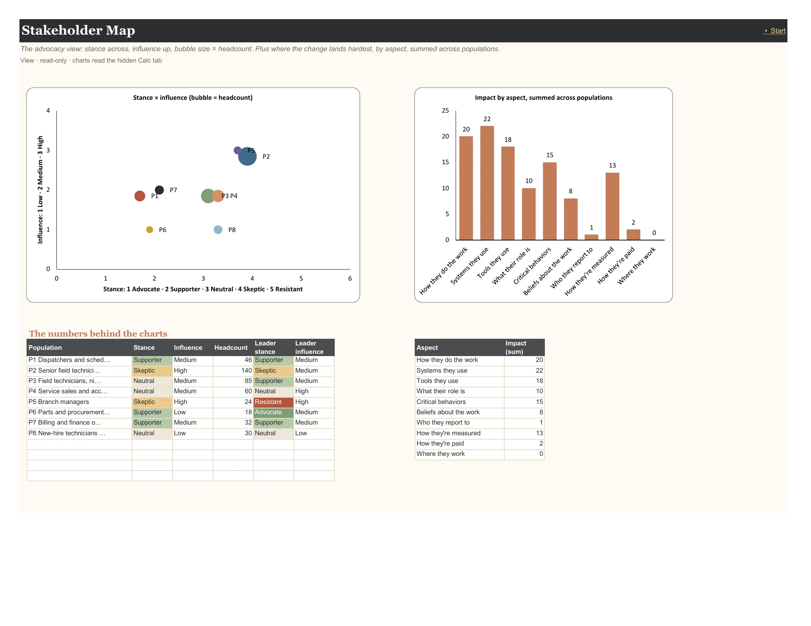
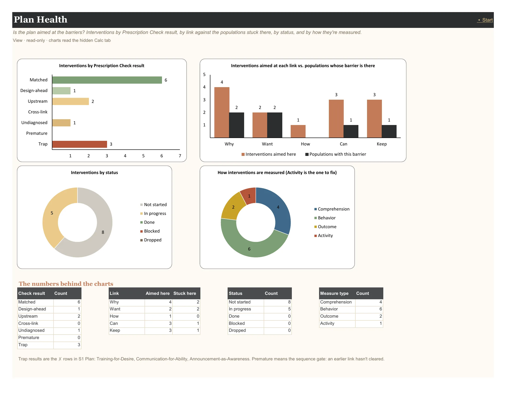
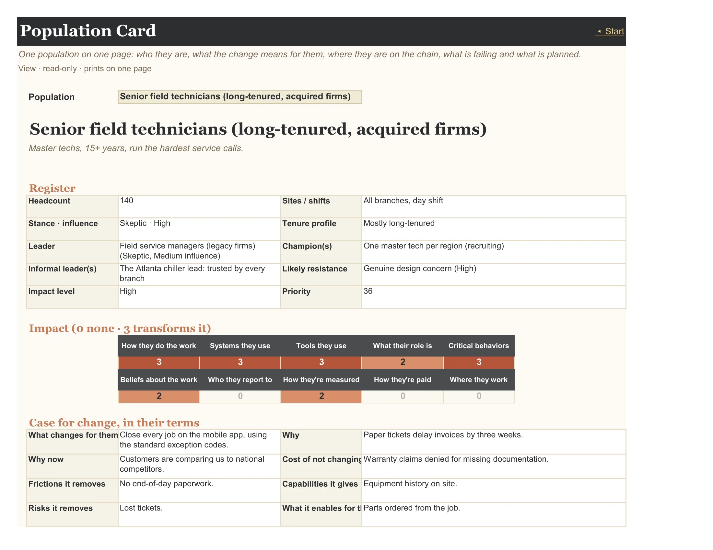
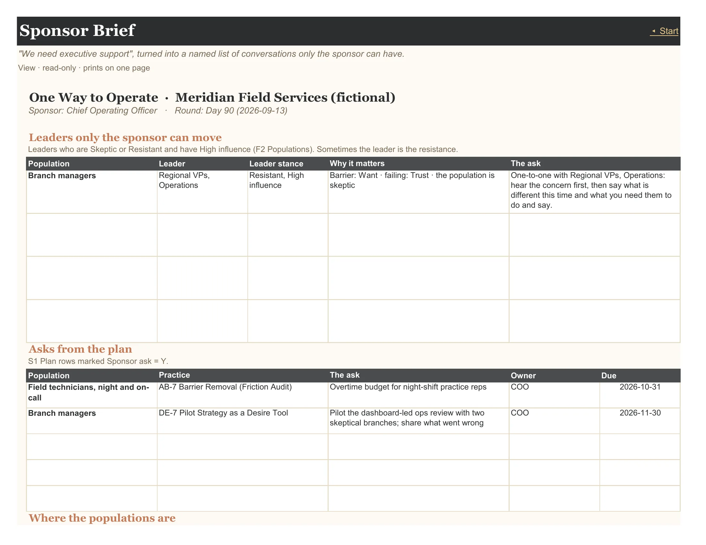

User guide · The tabs
7 tabs: Readiness Map, Barrier Picture, Journey, Stakeholder Map, Plan Health, Population Card, Sponsor Brief.
Read-only pages that turn the inputs into pictures you can act on and hand to people. They all follow the current round set in F1 Setup. The chart tabs read a hidden Calc tab, and every chart has a table twin beside it, so nothing is lost if a chart renders differently on one platform.
Context (opens in a new tab): The Prescription Trap
On this page: Readiness Map · Barrier Picture · Journey · Stakeholder Map · Plan Health · Population Card · Sponsor Brief
Where every population is on the chain this round. Different groups sit at different barrier points at the same time: there is no organization-wide score, by design.
The dashboard. Tiles count what needs attention, the barrier distribution shows populations and headcount at each link, the heat map lists every population by priority with its barrier cell marked ●, the journey shows each population's barrier round by round (↩ marks a regression), and the stakeholder grid places populations by influence and stance.

Reads from: F1 Setup F2 Populations F3 Impact I1 Sweep R1 Root S1 Plan S2 Pre-Flight Journey
Tiles: Populations named · Assessed this round · Confirmed barriers · Trap flags open (S1 Plan) · Evidence warnings this round · Stated vs. assessed gaps · Regressions since last round · Pre-flight items at risk.
Where the headcount sits on the chain this round, and each population's readiness profile. No organization-wide score, by design.
Where the headcount sits on the chain this round, how many populations are at each barrier point, and each population's five scores side by side.

Reads from: F1 Setup F2 Populations F3 Impact I1 Sweep R1 Root S1 Plan S2 Pre-Flight Journey
Charts: Headcount at each barrier point · Populations at each barrier point · Readiness profile: this round's scores by population (1–5). Each has a table twin on the tab.
Barrier points move. The portfolio moving toward Clear round by round, each population's path, and one population's scores over time.
The portfolio moving toward Clear round by round, each population's path through the chain, and one population's scores over time (pick it at the top of the tab).

Reads from: F1 Setup F2 Populations F3 Impact I1 Sweep R1 Root S1 Plan S2 Pre-Flight
Charts: Populations at each barrier, round by round · Each population's barrier point by round (1 Why · 2 Want · 3 How · 4 Can · 5 Keep · 6 Clear) · Scores by round for the selected population. Each has a table twin on the tab.
The advocacy view: stance across, influence up, bubble size = headcount. Plus where the change lands hardest, by aspect, summed across populations.
The advocacy view: stance across, influence up, bubble size = headcount. Beside it, where the change lands hardest, by aspect, summed across populations.

Reads from: F1 Setup F2 Populations F3 Impact I1 Sweep R1 Root S1 Plan S2 Pre-Flight Journey
Charts: Stance × influence (bubble = headcount) · Impact by aspect, summed across populations. Each has a table twin on the tab.
Is the plan aimed at the barriers? Interventions by Prescription Check result, by link against the populations stuck there, by status, and by how they're measured.
Is the plan aimed at the barriers? Interventions by Prescription Check result, interventions aimed at each link against the populations stuck there, status, and how the interventions are measured.

Reads from: F1 Setup F2 Populations F3 Impact I1 Sweep R1 Root S1 Plan S2 Pre-Flight Journey
Charts: Interventions by Prescription Check result · Interventions aimed at each link vs. populations whose barrier is there · Interventions by status · How interventions are measured (Activity is the one to fix). Each has a table twin on the tab.
One population on one page: who they are, what the change means for them, where they are on the chain, what is failing and what is planned.
One population on one page: register facts, impact, the case for change, this round's scores with trend arrows and the barrier marked, failing conditions with what to reach for, planned interventions with their check, and the mistakes to avoid. Choose the population at the top; print it and hand it to that population's leader.

Reads from: F1 Setup F2 Populations F3 Impact I1 Sweep R1 Root S1 Plan S2 Pre-Flight Journey
"We need executive support", turned into a named list of conversations only the sponsor can have.
"We need executive support," turned into a named list: leaders who are skeptical or resistant and highly influential, every Plan row marked Sponsor ask, where the populations are, and the three highest-priority populations. One page.

Reads from: F1 Setup F2 Populations F3 Impact I1 Sweep R1 Root S1 Plan S2 Pre-Flight Journey